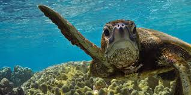

Types of sea turtles
Sea turtles, sometimes called marine turtles, are reptiles of the order Testudines and of the suborder Cryptodira.
The seven existing species of sea turtles are:
The green sea turtle, Loggerhead sea turtle, Kemp's ridley sea turtle, olive ridley sea turtle,
hawksbill sea turtle, flatback sea turtle, and leatherback sea turtle.